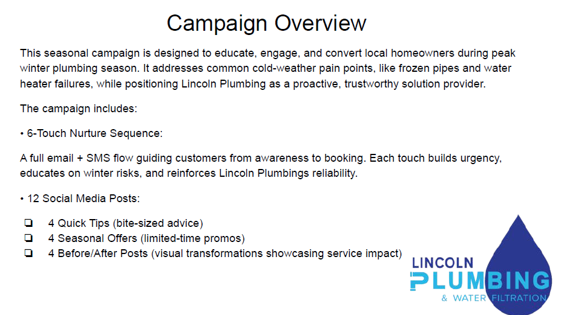
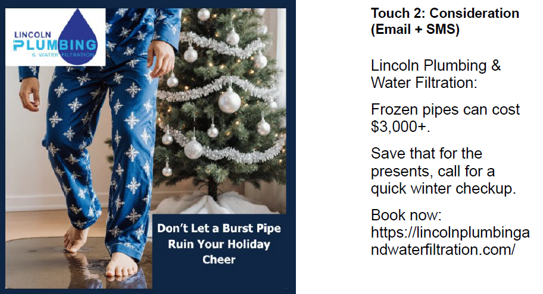
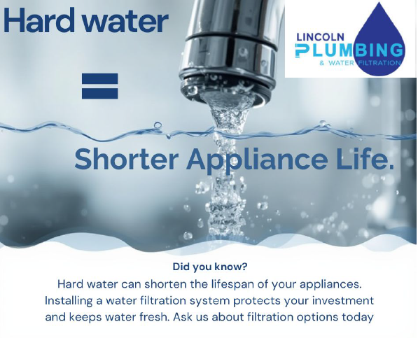

What is a Seasonal Marketing Campaign?
Seasonal marketing campaigns are strategic marketing initiatives built around predictable customer needs that occur during specific times of the year. For home service businesses, winter presents unique challenges for homeowners, creating opportunities to provide educational content, build trust, and promote preventative services through targeted email, SMS, social media, and lead-generation campaigns.
Portfolio Notice: These materials were created as part of a digital marketing internship and are displayed solely for portfolio and educational purposes. Please do not contact any businesses using information contained within these samples.
2026 Winter Plumbing Campaign
This seasonal marketing campaign was designed to educate homeowners about common winter plumbing problems while generating qualified service leads. The campaign focused on homeowner education, preventative maintenance, and customer trust-building through multiple marketing channels.

Project Goals
The primary goal of this campaign was to educate homeowners about common winter plumbing risks while positioning the company as a trusted local resource. The campaign was designed to generate qualified service leads, increase customer engagement through valuable educational content, and encourage preventative maintenance services before emergency repairs became necessary.
Deliverables
As part of this project, I developed a complete six-touch email and SMS nurture sequence designed to guide prospects from awareness to booking. The campaign also included twelve custom social media graphics, seasonal promotional content, and lead-generation materials that supported customer education and service conversions throughout the winter season.
Campaign Overview
The campaign was a complete nurture sequence that guided prospective customers from awareness through booking. Messaging focused on frozen pipes, winter plumbing emergencies, maintenance services, customer testimonials, and seasonal offers.
Sample Work

Example email and SMS creative from the nurture sequence.

Additional email and social campaign assets.


Skills Demonstrated
This project strengthened my skills in marketing strategy, email and SMS marketing, campaign planning, copywriting, social media marketing, lead generation, and customer journey development. It also provided hands-on experience creating multi-channel marketing campaigns that balance customer education with business objectives.
Contact
Casar, NC | brkbrcktt@gmail.com | LinkedIn